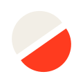

Qué somos: un estudio de edición de video para marcas, negocios y creadores de habla hispana.
Promesa: editamos videos que nadie se salta. Cada decisión de edición (gancho, corte, subtítulo, sonido) existe para que la gente siga mirando.
Por qué "CORTE": el corte es la unidad mínima de la edición. El isotipo es un disco cortado en diagonal: la pieza que separa una toma de la siguiente.

Espacio libre: deja alrededor del logo al menos la altura de la letra "O". Tamaño mínimo: 24 px de alto en pantalla. El punto final siempre va en Rojo Corte.
Proporción: 70 % Negro Sala, 25 % Hueso, 5 % Rojo Corte. El rojo marca lo importante (el punto, un botón, una palabra), nunca fondos grandes salvo en transiciones de video de un tiempo de duración.
Black (900) para titulares, ExtraBold (800) para subtítulos. Interletrado −3 % a −5 %.
Itálica, para una o dos palabras con intención: cuenta, ritmo, cada.
JetBrains Mono para timecodes, etiquetas y datos técnicos. Siempre en mayúsculas con interletrado amplio.
HH:MM:SS:FF en mono. Numera secciones de la web, marca el inicio de los videos y ordena presentaciones.
Círculo Rojo Corte que parpadea. Señala "en vivo", "ahora" o la llamada a la acción.
Las transiciones de marca separan el isotipo en dos mitades por la diagonal y las vuelven a unir con un golpe de sonido.
Pistas de clips de colores con cabezal de reproducción. Se usa para explicar procesos y en el visor de la web.
Directa, segura y cercana. Tuteamos. Frases cortas. Hablamos de resultados para el cliente, no de nuestras herramientas.
@corte.studio · avatar: isotipo sobre Negro Sala.
cortestudio.co · hola@cortestudio.co (verifica que el dominio y los usuarios estén libres antes de registrarlos).